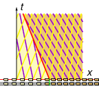

Source code for images: code.wl
Return to traffic model summary
Cars travelling at 60% maximum density (40% of the speed limit) are faced with a denser & slower region ahead, at 80% maximum density (20% of the speed limit). In symbols,
What happens?

We have the following:
| Qty | Before | After |
|---|---|---|
| N | 0.6 \Nmax | 0.8 \Nmax |
| V | 0.4 \Vmax | 0.2 \Vmax |
| F | 0.24 \Nmax\Vmax | 0.16 \Nmax\Vmax |
| \frac{\td F}{\td N} | -0.2 \Vmax | -0.6 \Vmax |
Thus we have characteristics…
We have a problem: the 'after' characteristics (slow & dense) have a higher signal speed than the 'before' characteristics (fast & sparse), so eventually they will collide. What happens?
Unlike the traffic light example where we had a transition fan (moving from slow & dense to fast & sparse), here we have a shockwave at the interface where fast & sparse abruptly becomes slow & dense.
Suppose the shockwave interface travels at velocity \Vsh. The relative velocity of cars is \Vb - \Vsh on the 'before' side and \Va - \Vsh on the 'after' side. Since flux (density times velocity) must be conserved, we have
and therefore the shockwave speed is
Note that this is the slope of the secant line through the points (\Nb, \Fb) and (\Na, \Fa) on the flux–density parabola.
For the current problem we get \shock{\Vsh = -0.4 \Vmax}, and so the shockwave interface is the line x = \shock{-0.4 \Vmax} t. This separates the 'before' region (fast & sparse) and the 'after' region (slow & dense).
In real life we obviously don't brake instantly, but abrupt reductions in speed do propagate backward in a shockwave, e.g. when an idiot doesn't get up to speed before doing a merge.